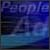

Entertainment
Finance
Information
Museums
Retail
Technology
|
Education Entertainment Finance Information Museums Retail Technology |
|
Education | |
 |
EdScape www.edscape.com Educators are finding innovative ways to use the web. EdScape, a Simon & Schuster/CCC initiative for grades K-12, is one of the more innovative places to go. The site provides a user-friendly place for online curricula and teaching materials, as well as a way for teachers to share professional ideas. We designed the site with "buckets" for existing educational materials, and created EdScape's positioning, name and identity. Related FBP Education Clients: Fordham University, Columbia University, Harcourt Brace, Federal Direct Student Loan Program . . . |
| Entertainment
See:
"Dream Sheet" (MSN Network) | |
 |
Girl 6 This web site, which generated 60,000 visits in it's first month, was designed to give visitors both a visual and audio experience. The site built on the film's theme of "phone sex" by featuring a "virtual pay phone" interface, complete with the "calling cards" normally found tucked in around urban payphones. By clicking on these, visitors could navigate various areas in the site. Also visitors were greeted by a recorded "on-line" welcome from Spike Lee, created especially for the website. |
 |
MGM Interactive www.mgmua.com/interactive2/ To help distinguish MGM Interactive from its competitors at E3, Frankfurt Balkind Partners was commissioned to redesign their main interface screen. Built around the concept of an arcade, the site's "cool" nostalgia found the right audience within the demographics of the web. |
| Multiplicity http://www.spe.sony.com/movies/multiplicity/pre.htm Does this sitepromote Cloning technologies or the new Sony Pictures movie, Multiplicity? Visitors can determine their stress level by taking interactive quizzes or playing Shockwave games. They can meet real clones, read historical clone headlines, plus enter a Clone Contest. The site also is loaded with Internet and advertising parodies, to amuse the net savvy (and net-weary) visitor. |
| The Great White Hype Enter the Sultan's Palace a web site with the attitude and imagery of a Las Vegas highroller. With a blend of boxing, glitz and showgirls, the site lets the visitor learn about the 20th Century Fox film through exploring the Sultan's office, going behind the scenes of the main boxing match and checking out the locker room. Hidden easter eggs and a "boss is coming!" panic button enhance the thrill for sports fans and moviegoers alike. |
 |
The Station@ Sony.com www.station.sony.com See the Sony.com home page |
|
Related FBP Entertainment Clients: Every major Hollywood studio, all broadcast networks; HBO, Cinemax, ESPN, AMC, CNN, Lifetime, Sci-Fi, Comedy Channel, Sony, Time Warner, Comcast . . . |
|
Finance | |
 |
Cowen & Company www.cowen.com Cowen & Company is an investment banking and asset management firm focused on technology, telecommunications, entertainment/media and health care. We helped Cowen position, brand, design and produce a web site that provides up-to-date information to its key audiences, and that also demonstrates Cowen's "tech-savvy" to its technology-focused audiences. Special highlights include:
|
|
Related FBP Financial Clients: Dillon Read, Chase, Citibank, Public Securities Association, Salamon Brothers . . . |
|
Information |
 |
Futurestep www.futurestep.com Creating a new brand for executive recruitment. |
| Gartner Group/@vantage Site @vantage is one of the most profitable sites on the web, providing information, research and analysis to IT professionals and links to leading IT vendor and service providers' Web sites. We worked with Gartner group to position @dvantage, created its identity and designed the site. We launched it with direct marketing materials and advertising. |
 |
Knight Ridder www.kri.com As part of an integrated branding effort, Frankfurt Balkind updated and re-designed the Knight Ridder corporate web presence. The re-design is part of a larger effort to update and broaden the site's navigational architecture. |
|  |
Towers Perrin www.towers.com Towers Perrin is one of the world's largest human resource consultants. We worked with them, first, to develop a cohesive web strategy, and, then, to create their site -- one that works for general interest users, but, of more importance, is tailored specifically to client needs. The client side of the site generates custom pages on-the-fly, tailored to the user's seniority, industry, location, and interests. |
Related FBP Information Clients: American Express Publishing, Time Inc. Magazines, CMP, New York Times Company, Times Mirror, Knight Ridder, Hearst New Media & Technology, The Washington Post . . . |
|
Museums | |
|
The Getty www.getty.edu The Getty, comprised of a museum and five institutes, has as its mission the dissemination of art and culture. We created this first phase site to bring together all Getty initiatives and give visitor's access to one of the world's largest repositories of knowledge about the arts. We are also responsible for Getty positioning, nomenclature, communications, and advertising. | |
Related FBP Museum Clients: The Guggenheim, The Tech, The Computer Museum. . . |
|
Retail | |
 |
Viacom Entertainment Store www.viacomstore.com With the launch of the first super Viacom Entertainment Store in Chicago, the online store was created primarily to build image and excitement. It appeals to all ages and showcases exclusive products from Viacom entertainment brands -- Paramount Pictures, VH1, MTV, Nick at Nite, Nickelodeon, and Star Trek. We created the interface and designed the store so that each brand could make its own individual statement, yet still fit within an overall Viacom store environment. |
 |
Time Warner's DreamShop Including direct marketers such as Eddie Bauer, Horchow, Spiegel and The Sharper Image, DreamShop from Time Warner was one of the Web's first upscale shopping malls. We created the DreamShop identity so that it could be easily integrated across new digital platforms, such as ITV and cable modem, designed the initial web site, created print promotional materials, and newspaper advertising. |
 |
Sony www.sony.com See The Station @ sony.com. |
|
Related FBP Retail Clients: Saks Fifth Avenue, The Gap, The Limited, Avon, Sony Plaza, Sony Style, HMV . . . |
|
Technology | |
 |
Apple Computer www.apple.com/publishing/archive/batman/main.html To provide a behind-the-scenes look at how Apple Computer technologies helped Warner Bros. create, manage and extend the Batman and Robin brand worldwide, Frankfurt Balkind Partners created a catalog and Web-site to explain the benefits of the "digital-workflow process" to professionals in the motion picture and other media industries. |
 |
AT&T www.alliance.att.com For AT&T's Alternate Channels group, we've created an umbrella site with 3 sub-sites that are customer-driven in personality, content, copy, and functionality. Appealing to different audiences, each site offers their specific audience(s) unique and relevant features such as Members Only areas; lively case histories; interactive questionnaires; comparative analyses. |
 |
EG&G EG&G is a global science and technology company with a remarkable history. Today it is involved in everything from the development of sensors for air bags to the management of NASA's Kennedy Center. Moving from a public sector to a commercial client base, EG&G needed a site that would increase awareness among its clients and prospects -- many of whom lacked understanding as to the depth and breadth of the company -- as well as to facilitate communications between its many groups worldwide. Over five years, we also created strategic annual reports and video presentations that helped successfully communicate and report upon EG&G's successful transition. |
|
NCR www.ncr.com NCR Corp. asked Frankfurt Balkind to create a uniform look and feel for its Web site that would provide a coherent and consistent experience for its visitors. The existing site was product-centric, rather than customer-responsive and each NCR business unit-Financial Services Group, Retail Services Group and Computer Services Group-had developed its own design formats for its pages within the site, resulting in a confusing identity for the corporation and an inconsistent navigational structure. Frankfurt Balkind redesigned the site's architecture, navigational flow and look and feel. Based on our corporate positioning work for its Annual Report, we also created an editorial framework for the presentation of information to visitors. Upon entering the site, a visitor is met with a compelling question relating to the challenges of building long-term, proftitable customer relationships. Each visit triggers a different question, targeted to the different industries NCR serves, such as financial services, retailing and communications. Following pages take the visitor through a narrative that explains how NCR helps its clients better know and serve their customers, and case studies provide specific examples of the ways NCR solutions have responded to the challenges faced by such global companies as Bank of America, Citibank, Kmart, JCPenney, Hallmark and Reuters. |
 |
NCR 1997 Annual Review www3.ncr.com/pressroom/review97/ Last year we worked with NCR to examine where it was in the marketplace and where it wanted to go and, after a thorough analysis, we positioned the company as "owning" the area of customer transactions. That positioning was first expressed in the 1996 print annual report we designed and, subsequently, repurposed for the web. We also helped develop the tagline, "Transactions in the Age of the Consumer" and advertising standards for NCR's agencies worldwide. |
Related FBP Technology Clients: Novell, IBM, Apple, Dell, Adobe Systems, Microsoft, MCI, Nynex, Comcast, Bell Atlantic, Oracle, Dell, Sharp Electronics . . . |